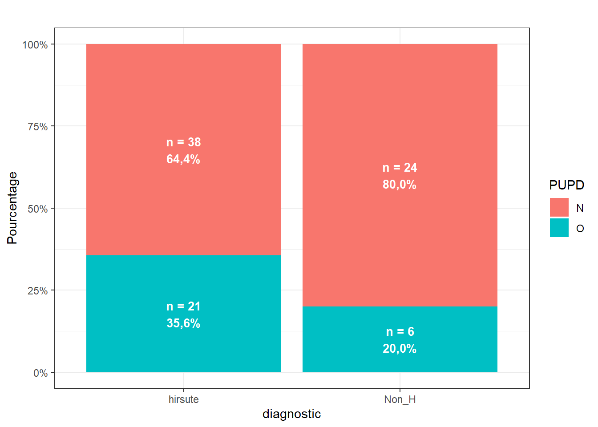
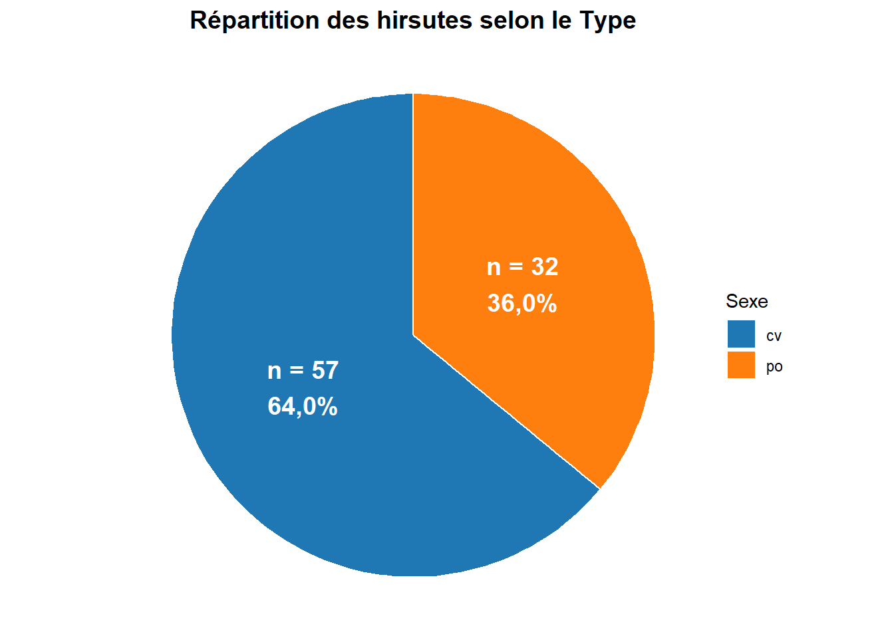

Peut-on penser que l’âge est différent selon le statut PUPD ?
Il s’agit de faire le lien entre une variable qualitative (PUPD) et une variable quantitative (âge). On va utiliser un test de comparaison de moyennes. On teste \(H_0:\mu_{PUPD=0}=\mu_{PUPD=1}\) par un test de Student :
t.test(Age~PUPD,data=Hirsutisme2)
Welch Two Sample t-test
data: Age by PUPD
t = 0.69151, df = 65.726, p-value = 0.4917
alternative hypothesis: true difference in means between group N and group O is not equal to 0
95 percent confidence interval:
-1.602222 3.299952
sample estimates:
mean in group N mean in group O
21.14516 20.29630
Au risque de 5% on ne peut pas rejeter H0, c’est à dire que l’on ne peut pas affirmer qu’il existe une différence significative au niveau de l’âge selon le statut PUPD.
Peut-on penser que plus la cortisol est élevée et plus l’insulinémie l’est également ?
Les deux variables considérées sont quantitatives, on fait donc un test de corrélation ou bien un test sur la pente du modèle :
mod <-lm(cortisol ~ insulinemie, data = Hirsutisme2)summary(mod)
Call:
lm(formula = cortisol ~ insulinemie, data = Hirsutisme2)
Residuals:
Min 1Q Median 3Q Max
-65.211 -28.842 -3.928 16.798 233.641
Coefficients:
Estimate Std. Error t value Pr(>|t|)
(Intercept) 90.64445 6.98329 12.980 <2e-16 ***
insulinemie 0.10658 0.05371 1.984 0.0504 .
---
Signif. codes: 0 '***' 0.001 '**' 0.01 '*' 0.05 '.' 0.1 ' ' 1
Residual standard error: 47.24 on 87 degrees of freedom
Multiple R-squared: 0.04331, Adjusted R-squared: 0.03231
F-statistic: 3.938 on 1 and 87 DF, p-value: 0.05036
Au risque de 5%, on ne peut pas affirmer qu’il existe un lien significatif entre le cortisol et l’insulinémie (\(p-value=0.054\)). Rappel la \(p-value\) doit être significativement inférieure au risque !
Peut-on penser que les boiteries sont plus présentes chez les individus hirsutes ?
Les deux variables considérées sont qualitatives donc on va faire un test du chi2
Pearson's Chi-squared test with Yates' continuity correction
data: obs
X-squared = 1.6098, df = 1, p-value = 0.2045
tab <- Hirsutisme2 %>%filter(!is.na(diagnostic), !is.na(PUPD)) %>%count(diagnostic, PUPD) %>%group_by(diagnostic) %>%mutate(pct = n /sum(n),label =paste0("n = ", n, "\n",percent(pct, accuracy =0.1, decimal.mark =",")) ) %>%ungroup()ggplot(tab, aes(x = diagnostic, y = n, fill = PUPD)) +geom_col(position ="fill") +geom_text(aes(label = label),position =position_fill(vjust =0.5),size =3.5, color ="white", fontface ="bold") +labs(title ="",x ="diagnostic",y ="Pourcentage") +scale_y_continuous(labels = scales::percent) +theme_bw()

Au risque de 5%, on ne peut pas affirmer qu’il existe un lien entre le diagnostic et le statut PUPD (\(p=0.2045\)).
Tester si l’une des caractéristiques quantitatives est indicatrice de l’hirsutisme.
t.test(glycemie~diagnostic, data=Hirsutisme2)
Welch Two Sample t-test
data: glycemie by diagnostic
t = 5.7758, df = 64.874, p-value = 2.356e-07
alternative hypothesis: true difference in means between group hirsute and group Non_H is not equal to 0
95 percent confidence interval:
0.4302627 0.8851046
sample estimates:
mean in group hirsute mean in group Non_H
1.6110169 0.9533333
Welch Two Sample t-test
data: cortisol by diagnostic
t = 0.13354, df = 56.607, p-value = 0.8942
alternative hypothesis: true difference in means between group hirsute and group Non_H is not equal to 0
95 percent confidence interval:
-20.48296 23.40951
sample estimates:
mean in group hirsute mean in group Non_H
100.79661 99.33333
Welch Two Sample t-test
data: insulinemie by diagnostic
t = 2.9149, df = 86.825, p-value = 0.004525
alternative hypothesis: true difference in means between group hirsute and group Non_H is not equal to 0
95 percent confidence interval:
15.73728 83.20622
sample estimates:
mean in group hirsute mean in group Non_H
107.30508 57.83333
Welch Two Sample t-test
data: prolactine by diagnostic
t = -0.78409, df = 54.136, p-value = 0.4364
alternative hypothesis: true difference in means between group hirsute and group Non_H is not equal to 0
95 percent confidence interval:
-19.875835 8.699564
sample estimates:
mean in group hirsute mean in group Non_H
26.71186 32.30000
Au risque de 5%, on peut affirmer que les moyennes du taux de glycémie (\(p-value=2.356e-07\)) et de l’insulinémie (\(p-value=0.004525\)) sont significativement différentes entre les hirsutes et ceux ne l’étant pas, ce n’est pas le cas pour le cortisol et la prolactine.
Les deux variables qui caractérisent l’hirsutisme sont glycémie et insulinémie.
Existe-t-il un lien entre le statut PUPD et le statut polyphagie ?
Au risque de 5%, on peut affirmer qu’il existe un lien significatif entre le statut PUPD et la polyphagie, la polyphagie étant plus présence chez les animaux présentant un problème de PUPD que les autres.
Existe-t-il un lien entre l’hyperhidrose et le statut PUPD ? de même avec le diagnostique.
Peut-on penser que la proportion des chevaux et celle des poneys est la même chez les hirsutes ?
tab <- Hirsutisme2 |>filter(!is.na(Type)) |>count(Type) |>mutate(pct = n /sum(n),label =paste0("n = ", n, "\n",percent(pct, accuracy =0.1, decimal.mark =",")) )# Diagramme circulaireggplot(tab, aes(x ="", y = n, fill = Type)) +geom_col(width =1, color ="white") +coord_polar(theta ="y", start =0) +geom_text(aes(label = label),position =position_stack(vjust =0.5),size =5, color ="white", fontface ="bold") +scale_fill_manual(values =c("#1f77b4", "#ff7f0e")) +labs(title ="Répartition des hirsutes selon le Type", fill ="Sexe") +theme_void() +theme(plot.title =element_text(hjust =0.5, face ="bold", size =14))

obs<-table(Hirsutes$Type)chisq.test(obs)
Chi-squared test for given probabilities
data: obs
X-squared = 7.4746, df = 1, p-value = 0.006258
On teste \(H_0:p_{\text{chevaux}}=p_{\text{poneys}}\). Au risque de 5%, on peut affirmer que la proportion de chevaux est significativement supérieure à celle de poneys chez les animaux hirsutes (\(p-value=0.006\)).
Peut-on penser que pour les hirsutes, le taux de glycémie moyen est supérieur à 1?
t.test(Hirsutes$glycemie,mu=1)
One Sample t-test
data: Hirsutes$glycemie
t = 5.5288, df = 58, p-value = 8.035e-07
alternative hypothesis: true mean is not equal to 1
95 percent confidence interval:
1.389796 1.832238
sample estimates:
mean of x
1.611017
Au risque de 5%, on peut donc affirmer que la moyenne de la glycémie chez les hirsutes (moyenne observée=1.6) est donc significativement supérieure à 1 (\(p-value=8.035e-07\)).
Peut-on penser que, chez les hirsutes, les chevaux ont un taux de glycémie supérieur aux poneys ?
t.test(glycemie~Type,data=Hirsutes)
Welch Two Sample t-test
data: glycemie by Type
t = 0.69166, df = 52.383, p-value = 0.4922
alternative hypothesis: true difference in means between group cv and group po is not equal to 0
95 percent confidence interval:
-0.2669733 0.5478943
sample estimates:
mean in group cv mean in group po
1.656250 1.515789
Au risque de 5%, on ne peut pas affirmer qu’il existe une différence significative entre le taux de glycémie moyen des chevaux et des poneys (\(p-value=0.4922\)).
Peut-on penser que chez hirsutes, plus l’on est âgé plus on a un taux de glycémie élevé ?
mod<-lm(glycemie~Age,data=Hirsutes)summary(mod)
Call:
lm(formula = glycemie ~ Age, data = Hirsutes)
Residuals:
Min 1Q Median 3Q Max
-0.8863 -0.6097 -0.3065 0.2411 2.8872
Coefficients:
Estimate Std. Error t value Pr(>|t|)
(Intercept) 1.642330 0.426373 3.852 0.000299 ***
Age -0.001556 0.020456 -0.076 0.939616
---
Signif. codes: 0 '***' 0.001 '**' 0.01 '*' 0.05 '.' 0.1 ' ' 1
Residual standard error: 0.8563 on 57 degrees of freedom
Multiple R-squared: 0.0001016, Adjusted R-squared: -0.01744
F-statistic: 0.005789 on 1 and 57 DF, p-value: 0.9396
Au risque de 5%, on ne peut affirmer qu’il y a un lien entre l’âge et le taux de glycémie (\(p-value=0.94\)).
Chez les hirsutes, peut-on penser que les variations de poids sont plus importantes chez les chevaux que chez les poneys ?